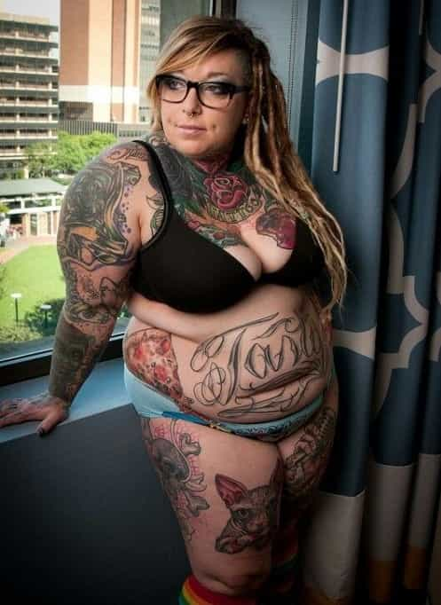
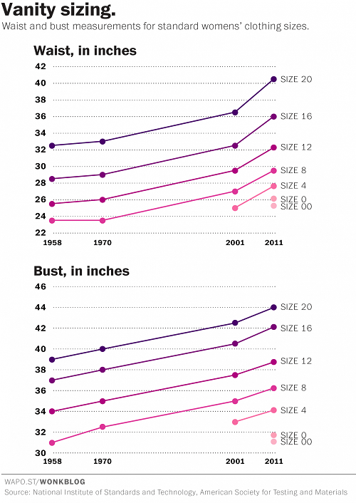
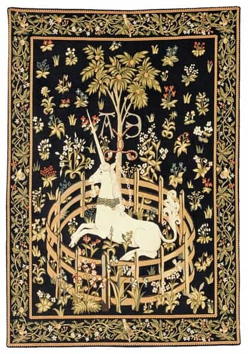

is an aspiring philosopher king, living the dream, travelling the world, hoarding FRNs and ignoring Americunts. He is a European at heart, lover of Latinas, and currently residing in the USA.


Guys, we need to talk. It’s 2017. Many of you are still using an outdated, biased, unattainable scale for grading women based on their physical appearance. Yes, I’m talking about the 10 point scale. Well guess what?
The Current Year is now 2017, and it’s time to throw that old grading scale out the window. If you’re still grading women the same way you always have, you need to check your privilege and check out some facts. Things have changed.
This data is almost a decade old.
One of the most massive changes is weight. 68% of American women are now Plus Sized.
ALL of these are smaller than the AVERAGE woman today
According to a 2016 study, which analyzed data from 1988-2010, the average American woman’s clothing size is between 16 and 18. Considering the age of this data, and the fact that weight is trending heavier every year, we are today looking at a size 18+ as average. What does this mean?
Less than a third of women are a healthy weight. Average is now fat.
The average American woman is 5’4″ and has a weight of over 166 pounds. With a 37.5 inch waist. Average. Meaning half weigh more, and half weigh less, but 166 is a pretty typical weight for women.
Normal distribution: a 5 weighs 166 pounds. A 9 now weighs 130 which would be considered a 5 in 1950.
A woman with average face and hair weighing just under 170 pounds and wearing 38″ jeans becomes the new 5 on a 10 point scale. Based on a normal distribution, a 9 would lie two standard deviations from the mean, weighing an average 130 pounds, and comprising around 2% of the population. Let’s examine the new 2017 10 Point Scale.
Spanish actress Soledad Miranda, 105 pounds, is 3 standard deviations from the mean today
A one is so physically disturbing that one cannot easily imagine something more ugly; if you could do something to her to make her uglier, she is by definition at least a two. In the interest of publishing standards, no images of ones will be shown.
A two is among the lower tier of women; decidedly ugly but not hideous. These include the old, the obese, the hairless, and the handicapped.
Still possesses teeth and hair = definitely not a 1
Threes are usually over the 166 pound average; 38% of American women are obese, and these include most 3s. Threes and lower are noticeably less attractive than average; they are the opposites of 7s, which are noticeably attractive, in this regard, but they are still seen with regularity. Be wary of considering them easy pickings—they are not good even for practicing game—they typically have cocky attitudes and use lots of sarcasm.

A four is only slightly below average; you should be seeing many of these on a daily basis. 4s, 5s and 6s as a whole constitute one standard deviation of the population distribution of all women (2/3 of American women are 4s, 5s, or 6s).
Above avg weight, but with long hair and smiling
Tess Holliday-above average weight but is a working “model”
Fives are average, which is not to say that they are neither fat nor thin; but that half of the women you see will be either above or below a 5.
Singer Adele has an average body, though skin and hair are above average
Remember, 70% of women are overweight, and clothing sizes have been constantly redefined upwards to fit the ever expanding “normal” which is now a 37.5″ inch waist.
These women have size 16-18 bodies with above average hair and makeup–5 bordering on 6
Meghan Trainor, 9 pounds above avg, but with superior clothing/grooming

A size 16 in 1960 wasn’t so bad (though it was still larger than average)
Sixes are slightly above average, but still within the range of most typical women you see. This includes women slightly under the average weight of 166.
10 pounds below average
Well below average weight and long hair make them a rare catch
This includes girls below average weight, approaching healthy, physically attractive weight but not boner-inducing.

This girl is in the top 15% of all American women
This also includes women of attractive weight who have permanently degraded their physical beauty by graffiti and shrapnel.
This group will have typically attractive traits. Body weight is not thin, but still below average, and flaws are present, though not immediately seen at first glance. Due to their rareness, they are often former 9s that have aged or gained weight, but are not overweight like 70% of American women.
Bruce Jenner is an 8/10 on the female scale.
Remember that even at level 8+, the physical appearance may be pleasant, but their speech and behaviors are usually boner-killing if they were raised in urban America.
Elbows slightly pointed, manly hands. A high 9 in America
The nines are the top 2% of women and include the Amish, girls with pleasant smiles, and a body with no visibly drooping fat. A small portion of them (3 standard deviations from the mean, or 0.1% of the population) will be visibly attractive.
While the above is undecidedly attractive, that is what healthy girls in their early 20s are supposed to look like, which is why she would be considered a 5 in many cultures. Average in some cultures is attractive. Average in America is a 38″ waist.

While women can approach 10, they can never fully reach it. A 10 implies perfection, that there’s not anything better. If you think a model or celebrity is a 10, she’s likely been boosted a couple of points by airbrushing and makeup. If you find a 22-year-old who you think is a perfect 10, she probably looked better at 21. Or would look better with a breast slightly larger. Or if she lost 5 pounds. It is highly unlikely that you are seeing her at her maximum beauty.
There is no perfection; there is only 9+. Anything 9.5+ has no easily recognizable physical flaws. 9.5 is the highest rating a woman can objectively be given. You can browse some beautiful women here.
Eights and nines are the top 4% of all women in America. The majority of them will be too young, too old, married, dating politicians, athletes, or sheiks, or living in NYC or L.A while you are wanting to meet them. That leaves a very small number for the rest of men to chase after. If you’re not happy dating 7s and below, you may need to consider looking elsewhere.
American women are large, and getting larger all the time. And their attitudes and behavior are becoming less feminine all the time. If your dating options are restricted to American women, you’d better get used to the new normal.
Read More: 42 Things Wrong With American Women